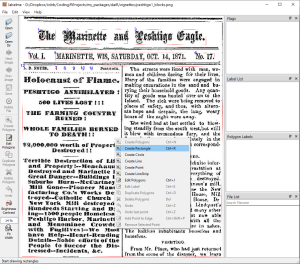

Correcting text output from Google Document AI
Thomas Hegghammer
Source:vignettes/reconstructing_text.Rmd
reconstructing_text.RmdLast updated 4 March 2021
Google Document AI (DAI) has excellent character recognition, but often reads columns wrong. This vignette will show you how to identify and reorder jumbled text with the tools in the daiR package.
The problem
Server-based OCR engines such as Google Document AI and Amazon Textract represent a major advance in OCR technology. They handle visual noise extremely well and effectively eliminate the need for image preprocessing, the most agonizing part of OCR in tesseract and other standalone libraries. DAI also reads non-Western languages such as Arabic better than any other general engine I have seen.
But DAI and Textract still struggle with text columns and irregular page layouts. In my experience, DAI will misread a multi-column page about half the time, and the error rate increases with the complexity of the layout. This is not a problem if you plan to apply “bag-of-words” text mining techniques, but if you’re looking at Natural Language Processing or actually reading the text, you cannot trust Document AI or Textract to always return accurate text.
DAI column-reading errors are of two main types. The first is to put text blocks in the wrong order, and the second is to merge blocks that shouldn’t be merged. Both errors can be corrected programmatically with the tools in the daiR package.
Reordering blocks
To illustrate, let’s feed DAI a simple two-column text. This one is from the CIA’s archive of declassified intelligence documents:

Following the two other daiR vignettes, we start by loading the libaries and setting our default Storage bucket:
library(daiR)
library(googleCloudStorageR)
gcs_global_bucket("superbucket_2021")Then we get our pdf, upload it to Google Storage, and pass it to Document AI:
download.file("https://www.cia.gov/readingroom/docs/1968-03-08.pdf",
"CIA_columns.pdf",
mode = "wb")
gcs_upload("CIA_columns.pdf")
dai_async("CIA_columns.pdf")We check our bucket for the json output and download it when it’s ready:
gcs_list_objects()
gcs_get_object("CIA_columns.pdf-output-page-1-to-1.json",
saveToDisk = "CIA_columns.json")Finally we extract the text:
text <- text_from_dai_file("CIA_columns.json")
cat(text)
#> Approved For Release 2009/02/06: CIA-RDP79-00927A006300050002-8
#> SECRET
#> CZECHOSLOVAKIA OUTLINES ECONOMIC "ACTION PROGRAM”
#> The Dubcek regime has out-
#> lined the economic portion of
#> its party "action program.' It
#> calls for the end of fixed prices
#> on a large number of items, with
#> prices on others being permitted
#> to fluctuate within limits. Un-
#> less these changes are made with
#> a careful view to their impact
#> on living standards, however,
#> they might reduce public support
#> for the new Dubcek administra-
#> tion.
#> Czech consumer in connection
#> with these price increases. It
#> states that retail prices will
#> not be changed without considering
#> incomes of the population, and
#> that increases probably will be
#> reviewed by a special commission
#> on living standards to ensure
#> that the general level of retail
#> prices stays within present guide-
#> lines.
#> This suggests that the
#> regime is well aware of the po-
#> litical danger in a sharp drop
#> in living standards.
#> The Novotny regime had rec-
#> ognized that major changes in
#> the retail pricing system were
#> essential to a meaningful eco-
#> nomic reform program, but had
#> taken little action in this field.
#> Under the newly announced pro-
#> gram, subsidies to producers
#> will be reduced and the turn-
#> over tax on retail sales will
#> be made more flexible. These
#> measures are not controversial,
#> but their result will be an in-
#> crease in some retail prices.
#> Many of the other major rec-
#> ommendations of the economic "ac-
#> tion program" were drawn directly
#> from the economic reform begun
#> two years ago.
#> Plant managers
#> will have more freedom both in
#> staffing and in production de-
#> cisions, and will have greater
#> responsibility for profitable op-
#> eration. The program also con-
#> tains a new proposal
#> that mar-
#> ginal agricultural land be leased
#> to independent producers as a
#> means of stimulating production.
#> The economic "action pro-
#> gram" promises safeguards to the
#> 25X1
#> *
#> SECRET
#> Page
#> 12
#> WEEKLY SUMMARY
#> 8 Mar 68
#> Approved For Release 2009/02/06 : CIA-RDP79-00927A006300050002-8On first inspection, this does not look so bad. But notice the transition from the first to the second paragraph:
… they might reduce public support for the new Dubcek administration. Czech consumer in connection with these price increases.
Something’s not right. Could it be a column-reading error?
We can find out with the function draw_blocks(), which extracts boundary box data from the .json file and draws numbered rectangles on an image of each page of the source document.
draw_blocks("CIA_columns.pdf", "CIA_columns.json")Check your folder for a a file ending in _blocks.png and pull it up:

We can immediately see that the blocks are in the wrong order. How to fix this?
Fortunately, the .json file from DAI comes with a ton of data that allow us to programmatically reorder the text. The key is to generate a token dataframe with page location data and then filter and reorder as necessary. We create the dataframe with build_token_df():
token_df <- build_token_df("CIA_columns.json")
str(token_df)
#> 'data.frame': 350 obs. of 9 variables:
#> $ token : chr "Approved " "For " "Release " "2009/02/06" ...
#> $ start_ind: num 1 10 14 22 32 34 37 38 65 72 ...
#> $ end_ind : chr "9" "13" "21" "31" ...
#> $ left : num 0.229 0.307 0.338 0.406 0.494 ...
#> $ right : num 0.301 0.333 0.397 0.489 0.5 ...
#> $ top : num 0.0379 0.0383 0.0383 0.0383 0.0387 ...
#> $ bottom : num 0.0546 0.0542 0.0542 0.055 0.0546 ...
#> $ page : int 1 1 1 1 1 1 1 1 1 1 ...
#> $ block : num 1 1 1 1 1 1 1 1 1 2 ...The dataframe has the words in the order in which DAI proposes to read them, and the block column has the number of the block to which each word belongs. This allows us to reorder the blocks while keeping the within-block word order intact.
We see from the annotated image that the real order of the blocks should be 1 - 2 - 3 - 5 - 7 - 4 - 6. We can store this in a vector that we use to reorder the dataframe.
order <- c(1, 2, 3, 5, 7, 4, 6)
token_df$block <- factor(token_df$block, levels = order)
token_df_correct <- token_df[order(token_df$block),]We get the correct text from the token_df_correct$token column:
Now the transition from the first to the second paragraph makes more sense:
snippet <- substr(text, start = 1, stop = 700)
cat(snippet)
#> Approved For Release 2009/02/06: CIA-RDP79-00927A006300050002-8
#> SECRET
#> CZECHOSLOVAKIA OUTLINES ECONOMIC "ACTION PROGRAM”
#> The Dubcek regime has out-
#> lined the economic portion of
#> its party "action program.' It
#> calls for the end of fixed prices
#> on a large number of items, with
#> prices on others being permitted
#> to fluctuate within limits. Un-
#> less these changes are made with
#> a careful view to their impact
#> on living standards, however,
#> they might reduce public support
#> for the new Dubcek administra-
#> tion.
#> The Novotny regime had rec-
#> ognized that major changes in
#> the retail pricing system were
#> essential to a meaningful eco-
#> nomic reform program, but had
#> taken little action in this field.
#> Under theSplitting blocks
A more complex — and, unfortunately, more common — situation is when DAI fails to distinguish between columns. This means that lines do not end where they should, resulting in long stretches of incomprehensible text. We can illustrate this with an article about the great Peshtigo forest fire in Wisconsin in 1871, available on the Internet Archive.

We do our processing routine again:
download.file("https://archive.org/download/themarinetteandpeshtigoeagleoct141871/The%20Marinette%20and%20Peshtigo%20Eagle%20-%20Oct%2014%201871.pdf",
"peshtigo.pdf",
mode = "wb")
gcs_upload("peshtigo.pdf")
dai_async("peshtigo.pdf")
# wait a little
gcs_get_object("peshtigo.pdf-output-page-1-to-1.json", saveToDisk = "peshtigo.json")This time we’ll skip the text printout and go straight to inspecting the boundary boxes:
draw_blocks("peshtigo.pdf", "peshtigo.json")As we can see, this time DAI has failed to distinguish between the two main columns. We can verify this by checking the beginning of the text:
text <- text_from_dai_file("peshtigo.json")
snippet <- substr(text, start = 1, stop = 1000)
cat(snippet)
#> The
#> Marinette and
#> Leshtigo Eagle.
#> Vol. I.
#> MARINETTE, WIS, SATURDAY, OCT. 14, 1871.
#> No. 17.
#> :
#> :
#> ;
#> :
#> :
#> L. B. NOYES.
#> PUBLISHER. The streets were lined with men, wo-
#> men and children fleeing for their lives.
#> Holocaust of Flame. Many of the families were engaged in
#> making excavations in the sand and bu-
#> PESHTIGO ANNIHILATED : rying their household goods. Any quan-
#> tity of goods wae hauled over on to the
#> 500 LIVES LOST!
#> Island. The sick were being removed to
#> places of safety, and thus, with altern-
#> THE FARMING COUNTRY
#> ate hope and despair, the long, weary
#> hours of the night wore away.
#> RUINED!
#> The wind had at last settled to blow-
#> WHOLE FAMILIES BURNED ing steadily from the south west, but still
#> TO DEATH!!
#> it blew with tremendous fury, and the
#> flames in the swamp immediately in the
#> $2,000,000 worth of Property rear of the town, raged with correspond-
#> Destroyed!!
#> ing fearfulness.
#> MENEKAUNE DESTROYED.
#> Terrible Destruction of Life
#> At daylight we get more definite infor-
#> and Property !--MenekauneThis means that we must find a way of splitting block 12 vertically.
What we will do is create a new boundary box that captures only the right-hand column. Then we will feed the location coordinates of the new box back into the token dataframe so that the tokens that fall within it are assigned a new block number. We can then reorder the blocks as we did in the previous example.
There are two main ways to obtain the coordinates of a new block: mathematically or through image annotation.
Mathematical splitting
We can split blocks mathematically by using the location data for existing blocks in the json file. We start by building a block dataframe to keep track of the blocks.
block_df <- build_block_df("peshtigo.json")Then we use the function split_block() to cut block 12 vertically in half. This function takes as input a block dataframe, the page and number of the block to split, and a parameter cut_point, which is a number from 1 to 99 for the relative location of the cut point. split_block() returns a new block dataframe that includes the new block and revised coordinates for the old one.
new_block_df <- split_block(df = block_df, block = 12, cut_point = 50)If we had more blocks to split, we could repeat the procedure as many times as necessary. We just have to make sure to feed the latest version of the block dataframe into the split_block() function.
When we have a block dataframe that captures the layout fairly accurately, we can use the reassign_tokens() function to assign new block values to the words in the token dataframe. reassign_tokens() takes as input the token dataframe and the new block dataframe and returns a revised token dataframe.
token_df <- build_token_df("peshtigo.json")
token_df_correct <- reassign_tokens(token_df, new_block_df) In this particular case, the blocks are in the right order after splitting, so we can extract a correct text right away. In other cases the blocks may need reordering, in which case we use the procedure from the previous section.
text <- token_df_correct$token %>%
paste(collapse="")
snippet <- substr(text, start = 1, stop = 1000)
cat(snippet)
#> The
#> Marinette and
#> Leshtigo Eagle.
#> Vol. I.
#> MARINETTE, WIS, SATURDAY, OCT. 14, 1871.
#> No. 17.
#> :
#> :
#> ;
#> :
#> :
#> :
#> :
#> ;
#> :
#> :
#> L. B. NOYES.
#> PUBLISHER. Holocaust of Flame. PESHTIGO ANNIHILATED : 500 LIVES LOST!
#> THE FARMING COUNTRY
#> RUINED!
#> WHOLE FAMILIES BURNED TO DEATH!!
#> $2,000,000 worth of Property Destroyed!!
#> Terrible Destruction of Life
#> and Property !--Menekaune Destroyed and Marinette in Great Danger--Buildings in Suburbs Burn--McCartney's Mill Gone--Pioneer
#> Manu-facturing Co.'s Works Des-
#> troyed--Catholic Church & New York Mill destroyed-- Hundreds Starving and Dy-and Dy
#> Ing--1500 people Homeless--
#> Peshtigo Harbor, Marinette
#> Menominee Crowded Fugitives !--We
#> Must have Help--Heart-Rending Details-Noble efforts of the
#> People to Succor the Dis-
#> tressed--Incidents, &c.
#> The streets were lined with men, wo-
#> men and children fleeing for their lives.
#> Many of the families were engaged in
#> making excavations in the sand and bu-
#> rying their household goods. Any quan-
#> tity of goods wae hauled over on to theMathematical splitting will often be the easiest method, and it can be particularly efficient when you have a lot of documents with the exact same column structure. However, it may sometimes be difficult to tell with the naked eye where the cut point should be. At other times the space between columns may be so narrow as to make precision important. For these situations we can use manual image annotation.
Manual splitting
In principle you can use any image annotation tool, so long as you format the resulting coordinates in a way that daiR’s processing functions understand. In the following, I will use labelme because it’s easy to use and daiR has a helper function for it.
Labelme opens from the command line, but has a fairly intuitive graphical user interface. We load the annotated image generated by draw_blocks(), click “create polygons” in the left pane, right-click while the cursor is in the page pane, and choose “create rectangle”.

Then we mark the right-hand column and label it 13 (for the number of the new block).

Click “save” and store the json file, for example as peshtigo1_blocks.json. Now we can load it in R and get the coordinates of the new block 13 with the function from_labelme(). This function returns a one-row dataframe formatted like block dataframes generated with build_block_df.
block13 <- from_labelme("peshtigo1_blocks.json")We can then assign a new block number to the tokens that fall within block13. For this we use reassign_tokens2(), which reassigns tokens on a specified page according to the coordinates of a single new block.
token_df_new <- reassign_tokens2(token_df, block13) Now we just need to reorder the token data frame by blocks, and the words will be in the right order. In this particular case, we do not need to supply a custom block order, since the block numbering reflects the right order of the text.
token_df_correct <- token_df_new[order(token_df_new$block), ]And again we have a text in the right order.